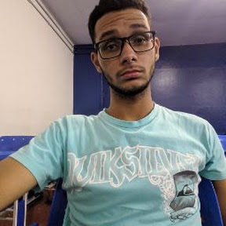

<ion-header [translucent]="true">
  <ion-toolbar>
    <ion-title>
      Filipe Diego da Silva Luiz
    </ion-title>
  </ion-toolbar>
</ion-header>

<ion-content [fullscreen]="true">
  <ion-header collapse="condense">
    <ion-toolbar>
      <ion-title size="large">Blank</ion-title>
    </ion-toolbar>
  </ion-header>

  <div id="container">
    
    <h1>Filipe Diego da Silva Luiz</h1>
    <h2>Turma: ADS0302N</h2>
    <h2>Matrícula: 19104529</h2>
  </div>
</ion-content>
